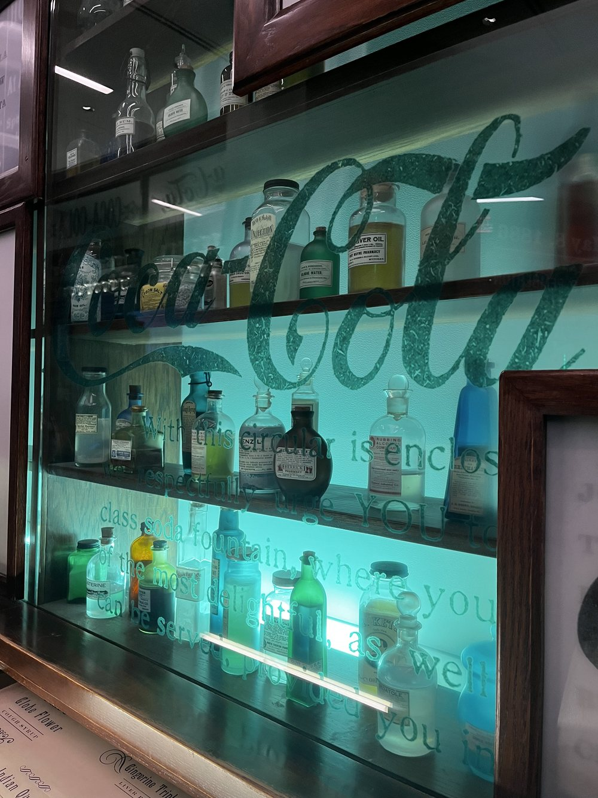

Fall 2026
History of Medicine (Graduate)

My teaching emphasizes a creative and student-led approach to topics in the global histories of medicine and science, ranging from bringing South American sodas to a lesson on colonial botany and extraction to assigning a student-led final examination. I have developed and taught in-person and online surveys in the history of medicine and science, both with a global focus, as well as more specialized courses in the history and anthropology of drugs and the history of the biomedical sciences. My teaching has been recognized with a Dean's Award for Distinguished Teaching by Graduate Students and a Graduate Fellowship for Teaching Excellence, and I have completed a Certificate in College and University Teaching.
I have taught the following courses:
Georgia Institute of Technology
History of Medicine (Graduate)
Introduction to the History of Disease and Medicine
Science, Technology, and the Modern World: What is a Drug?
University of Pennsylvania
Emergence of Modern Science
Medicine in History
University of Delaware
History of Medicine
I have worked as a teaching assistant for the following courses:
University of Pennsylvania
Medicine in History, The People's Health, Comparative Medicine, Health and Societies: Global Perspectives
McGill University
United States Since 1865, Indigenous Peoples and Empires, Women in European History 1700–2000, Health and the Healer in Western History